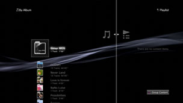

Música > Utilizando listas de reprodução > Criando ou reproduzindo listas de reprodução
Criando ou reproduzindo listas de reprodução
Você pode reunir as faixas desejadas dentre as faixas salvas no armazenamento do sistema e reorganizá-las na ordem desejada para criar e reproduzir as listas de reprodução.
1. |
Selecione |
|---|---|
2. |
Selecione |
3. |
Selecione a lista de reprodução criada e, depois, pressione o botão |
4. |
Selecione [Editar].  |
5. |
Selecione a faixa que você deseja adicionar à lista de reprodução. |
 (Música) >
(Música) >  (Listas de reprodução).
(Listas de reprodução). (Criar nova lista de reprodução). Siga as instruções na tela para criar a lista de reprodução.
(Criar nova lista de reprodução). Siga as instruções na tela para criar a lista de reprodução. .
. para interromper a edição. Você pode reproduzir a lista de reprodução criada em
para interromper a edição. Você pode reproduzir a lista de reprodução criada em Dica
Apenas as faixas salvas no armazenamento do sistema podem ser adicionadas a uma lista de reprodução.